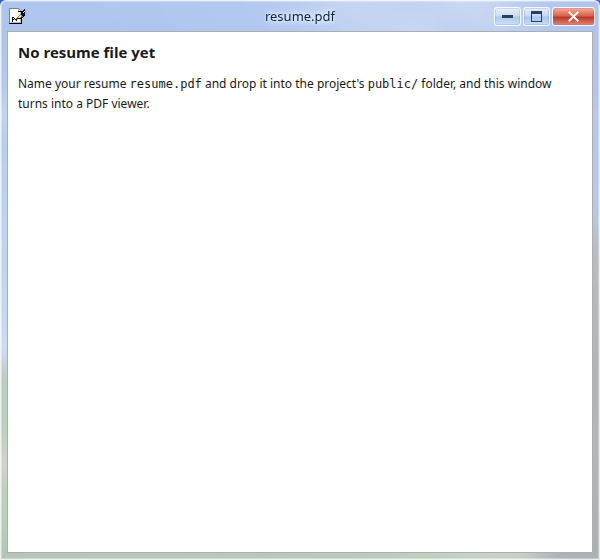

77-OS · 产品作品集案例
03 / 09
最初的五秒钟
一段可以跳过的 XP 式开机动画，然后是一个只需要点一下用户名的登录页。
Fig. 01
开机3.2 秒自动进入，或点 Skip 跳过——不会拦住回访的人
Fig. 02
登录点一下 Guest，先淡入黑屏，再淡入桌面
Jiaqi Huang
systemStore.ts — boot → login → desktop → shutdown
77-OS · 产品作品集案例
04 / 09
一个真的像操作系统的桌面
Fig. 03
Fig. 04
01拖动、缩放、最小化、最大化、关闭——都是真实的窗口机制
02焦点、层级、拖拽全部读同一个 windowStore
03拖拽时指针形态锁死，不会中途跳回系统箭头
Jiaqi Huang
windowStore.ts — open / focus / minimize / z-index
77-OS · 产品作品集案例
05 / 09
应用全览 · 内容与社区
「我的文件」不是假数据——双击就能看到美团、字节跳动豆包、蔚来、高校课题四段真实经历。

关于我开场照片 + 系统属性表

我的文件四段真实实习，一句话概括

项目详情完整文案，带具体数字

博客Markdown 文件，按日期排序

Moments留言板与访客数入口

留言板没配 Redis 时显示离线，不拖累全站

访客计数器同一降级逻辑，数字变成占位符

联系我写信表单，一键复制邮箱
Jiaqi Huang
content/site.ts — 一个文件驱动每一个窗口
77-OS · 产品作品集案例
06 / 09
应用全览 · 娱乐与工具
剩下的八个窗口——从一张复古播放列表到一个真的能敲命令的终端。

正在学习仿 Winamp 播放列表

音乐内嵌 Three.js 场景，独立页面

design不开窗口，原地弹出缩略图

扫雷真的能玩，也真的能赢

画图画笔、喷漆、贴纸，还有撤销

命令提示符help / tree / neofetch，真的能敲

回收站放弃过的想法，可以「恢复」

简历.pdf没放文件时的兜底提示，而不是报错
Jiaqi Huang
appMeta.ts — 16 个应用共用一套元数据
77-OS · 产品作品集案例
07 / 09
大多数人不会意识到的细节
Fig. 08
图标和指针都是修复的位图，不是新画的——但每一个热点都手动重新算过，切换指针形状时肉眼看不出跳动。


Jiaqi Huang
--glass-* / --cur-* tokens in globals.css
77-OS · 产品作品集案例
09 / 09
自己上去
点点看
线上地址77-os.vercel.app
邮箱1697429486@qq.com
Fig. 09
还有一件事里面真的藏着一个能玩、也能赢的扫雷。
Jiaqi Huang
Next.js 16 · 纯手写 CSS